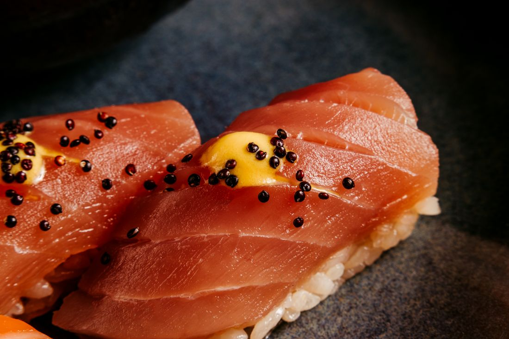
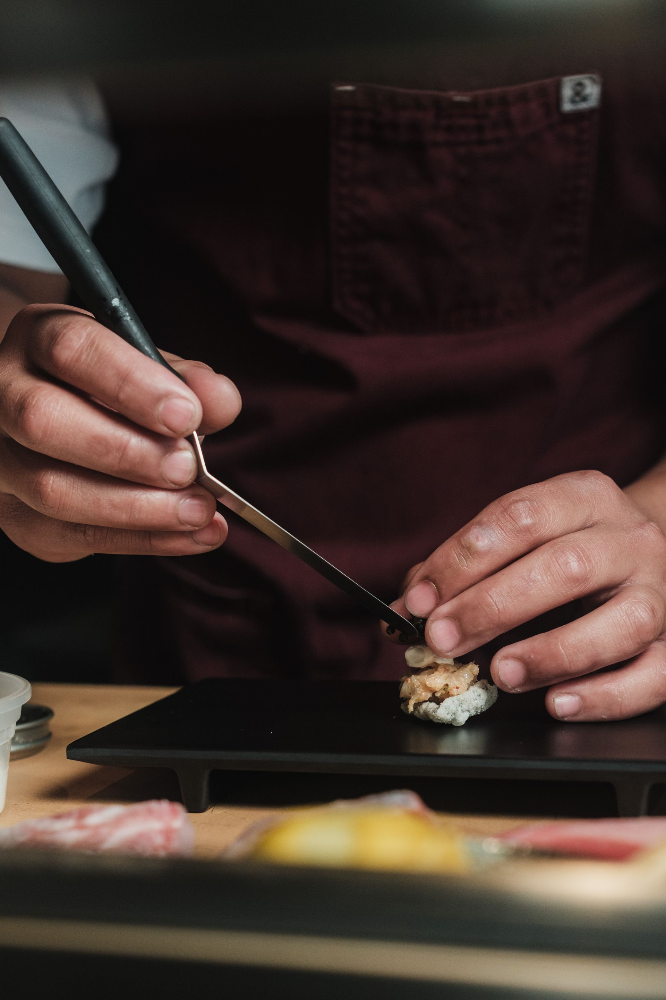
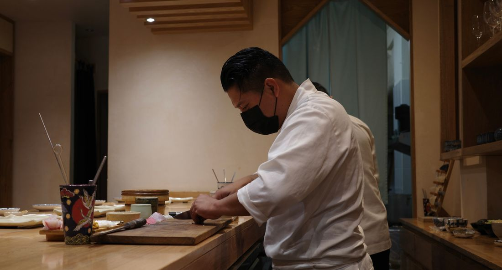
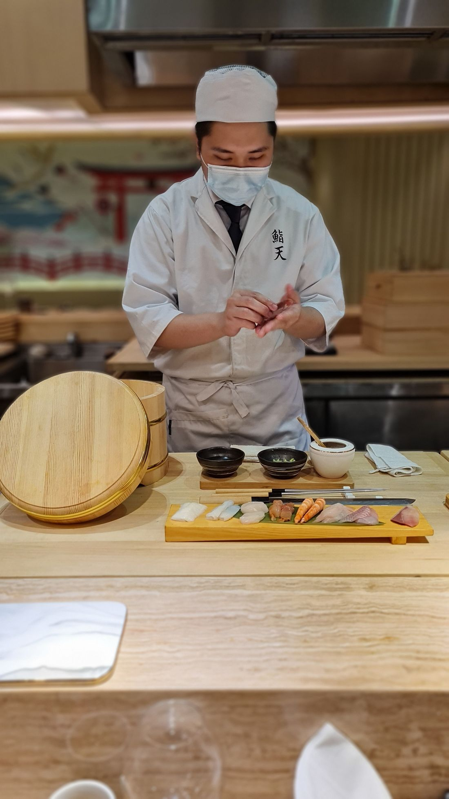
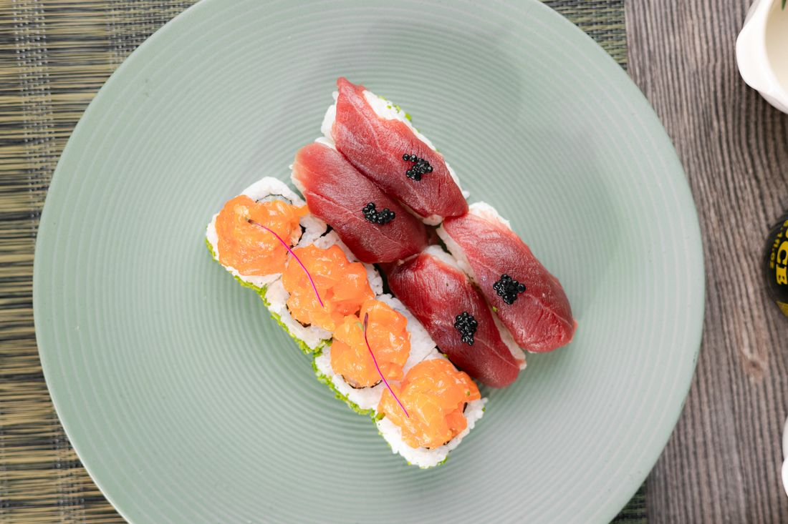
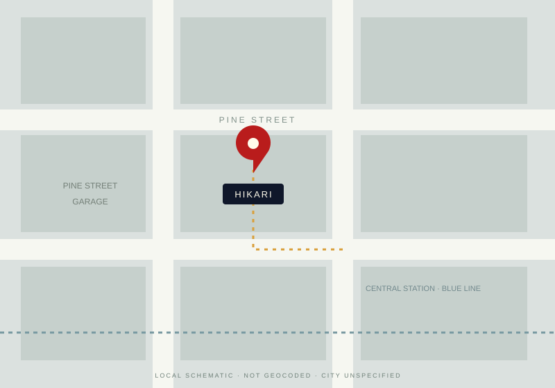

Peak SeasonWild-caught, Oma, Aomori Prefecture
Otoro (Bluefin Tuna Belly)
The pinnacle of tuna. Silky, marbled, and rich — served with aged soy and fresh wasabi.

HIKARI SUSHI
Precision. Seasonality. A moment, just for you.
A 14-seat omakase experience featuring the freshest fish
flown in daily from Tokyo's Toyosu Market.
A fictional restaurant concept · Local reservation previews only
Our Philosophy
At Hikari, we believe sushi is a conversation between chef and guest. Each piece of nigiri is shaped by hand, seasoned with decades of tradition, and served at the precise moment it reaches perfection. Our fish arrives daily from Toyosu Market, and our rice is seasoned with a house-blend vinegar aged for three years.
One time, one meeting. A fictional expression of Edomae hospitality; sourcing and affiliations are illustrative.



Omakase · Chef's choice
Our 18-course omakase is a journey through Japan's seasons, guided by Chef Kenji Tanaka's 25 years of experience. Each course is prepared in front of you at our hinoki wood counter. The menu changes daily based on what arrives from the market.
Omakase seating limited to 14 guests per evening. Reservations required 48 hours in advance.
Illustrative capacity and prices · No live inventory, market sourcing or reservations
The hands behind every piece
Head Chef & Owner
Born in Osaka, Chef Tanaka trained for 12 years under Master Jiro Ono's protégé in Tokyo before opening Hikari in 2019. His approach honors Edomae tradition while embracing the finest seasonal ingredients from both Japan and the Pacific Northwest.
25 years experience · Michelin-recognized · James Beard semifinalist 2025
Fictional biography and supplied credentials; no real person, training relationship, award or endorsement is claimed.
The quiet details
Illustrative stock photography, not Hikari's actual premises or staff. Select an image to explore.
Featured in
Supplied fictional press and guest copy · Not verified coverage, reviews or affiliations
“An extraordinary omakase. Each course was a revelation.”
The New York Times
“Hikari is the closest you'll get to Tokyo without a plane ticket.”
Eater
“The fish quality is unmatched. Chef Tanaka's knife work is mesmerizing.”
Sarah K. · Google Reviews
A seat at our counter
We recommend booking at least one week in advance for omakase seating. Walk-ins welcome for à la carte dining at the bar, subject to availability.
(555) 319-8800
reservations@hikarisushi.com
Original concept contacts, not verified booking channels. This local demo sends nothing and reserves no seats.
RESERVE YOUR MOMENT AWAITS

A LOCAL SCHEMATIC · NOT A VERIFIED MAPFind your moment of calm
Validated parking at Pine Street Garage
2 blocks from Central Station (Blue Line)
The source supplies no city. Address, transit and parking are illustrative; confirm the venue before planning a real visit.